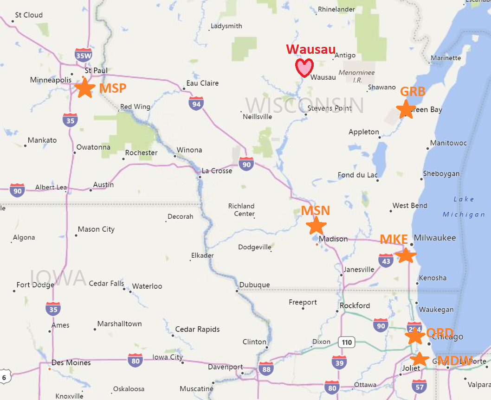

Thank you very much for being a part of our wedding! Below you'll find details on travel, hotel booking, suit rentals, the wedding venue, and contact details for the wedding party.
Thank you very much for being a part of our wedding! Below you'll find details on travel, hotel booking, suit rentals, the wedding venue, and contact details for the wedding party.
Please plan on being in Wausau, WI on 8/30. There is a local regional airport Central Wisconsin Airport (CWA). In order to fly into CWA you will most likely need to connect in; note there are fewer options as the flights in and out are limited.
Our recommendation would be to fly into one of the bigger airports (possibly even coordinate with other people flying in that same day) and then drive the remainder in a rental car. This will give you more flexibility on flight times.
We have a hotel block at the Hilton Garden Inn in Wausau, WI. The hotel will also be providing shuttle service to and from the wedding venue.
Suit rentals will be handled by Generation Tux which is an online suit rental service. The site allows us to customize what's ordered to cut down on cost so we opted not to do the belt and shoes; please bring a black belt and laced black dress shoes. You should have received an email with instructions to register and send in your measurements. You will receive your suit in the mail two weeks before the wedding (enough time for any needed changes). Their staff is very responsive and available through the chat (button at the bottom right of their website) - any changes or assistnace you need can be coordinated through there, but they request you contact them within 48 hours of receiving the suit so they have ample time to send any new items. They will reimburse pressing and also tailoring (up to $20 per item).
The wedding and reception will be at Trillium Creek Wedding Barn, 9029 11842 Naugart Dr, Athens, WI 54411. Shuttle service will be provided if you're staying at the Hilton Garden Inn (Trillium creek is roughly 20 minutes from the hotel). There is parking available.
We haven't yet picked a location for the rehearsal dinner on 8/31, but I will update everyone once we have these details. We will most likely do the rehearsal in the afternoon and then head to a restaraunt in town.